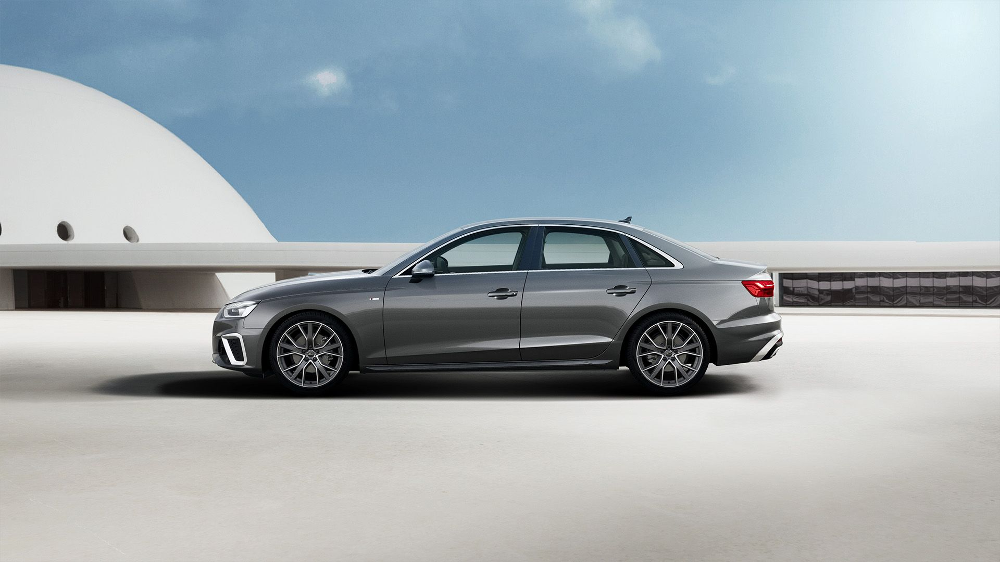
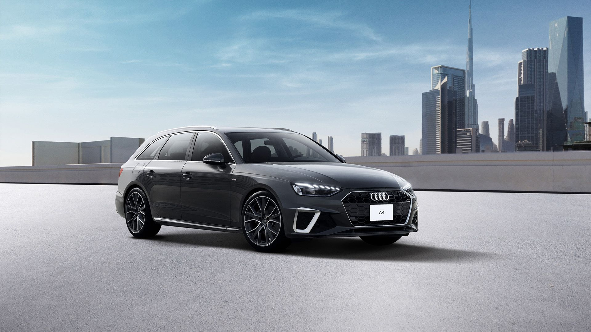

目前所在位置 > A4
A4 Sedan
奧迪A4 Sedan是一款典雅而豪華的四門轎車，提供出色的性能和舒適的駕乘體驗。它擁有多種引擎選擇，包括經濟高效的四缸引擎和更強勁的V6引擎選項。內部設計精美，配備豪華的皮革座椅和最新的娛樂系統。
截然不同的車身設計，賦予 The Audi A4 Sedan 全新設計語彙，展示更勝以往的跑格氣息：外觀彰顯動感，強勁且優美。
全車系標配 12.3 吋 Audi 全數位虛擬駕駛座艙，頂級品質與實用功能兼具的車室環境設計，從車用資訊娛樂系統、高效能引擎至安全駕駛輔助系統，如 ACC 主動式定速巡航控制系統、Audi lane assist 主動式車道維持及偏離警示系統、Audi side assist 車道變換輔助系統 (盲點警示) 等，宣示 Audi A4 Sedan 革新的設計美學。
無論是日常通勤還是長途旅行，A4 Sedan都能提供卓越的舒適性和安全性，是奧迪豪華轎車系列中的重要代表。

›A4 Avant
奧迪A4 Avant是一款精緻的旅行車，結合了豪華轎車的設計和實用性。它擁有與A4 Sedan相似的引擎選擇，但其設計更加注重載貨空間和多功能性。
Audi A4 Avant 兼具動感設計、頂級質感、數位化和靈活實用性。
外觀上，優雅修長的線條與輪廓，展現與前一代截然不同的嶄新風貌。
全車系標配 12.3 吋 Audi 全數位虛擬駕駛座艙，同時更標配全方位安全防護系統: ACC 主動式定速巡航控制系統、Audi lane assist 主動式車道維持及偏離警示系統、 Audi side assist 車道變換輔助系統 (盲點警示) 等科技。
當您置身頂級質感打造的寬敞車室，享受更為靈活實用的空間運用性時， Audi 的創新科技，將全方位實踐您對日常生活的所有想像。
A4 Avant的後車廂提供了額外的載貨空間，適合家庭使用或需要更多儲物空間的用戶。同時，它也保持了A4系列車型的卓越性能和豪華感受。

›